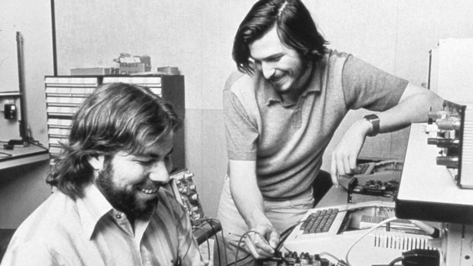
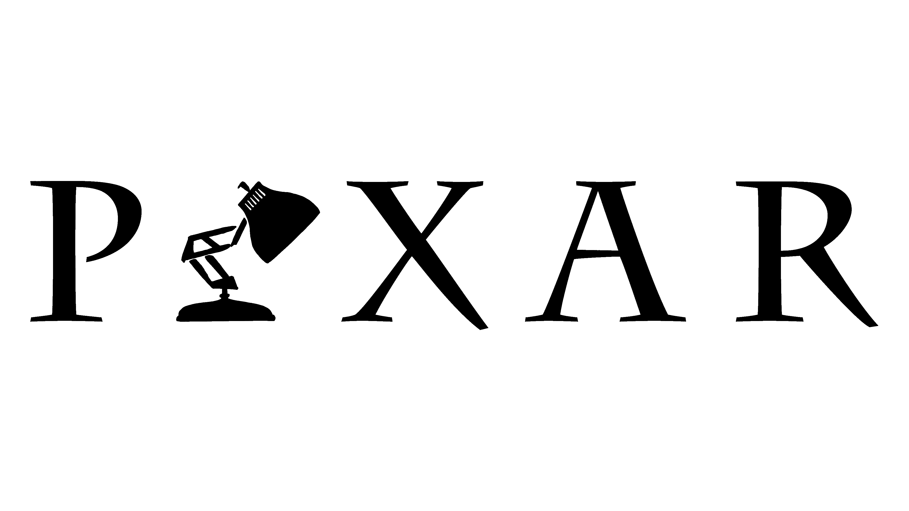

Steve Jobs
(Der Apple-typ)
Steven „Steve“ Paul Jobs (* 24. Februar 1955 in San Francisco, Kalifornien; † 5. Oktober 2011 in Palo Alto, Kalifornien) war ein US-amerikanischer Unternehmer.
Als Mitgründer und langjähriger CEO von Apple Inc. gilt er als eine der bekanntesten Persönlichkeiten der Computerindustrie.
Zusammen mit Steve Wozniak und Ron Wayne gründete
er 1976 Apple und half, sowohl das Konzept des Heimcomputers als auch später die Generation der Smartphones sowie Tabletcomputer populär zu machen.
Zudem war er mit dem Macintosh
ab 1984 maßgeblich an der Einführung von Personal Computern mit grafischer Benutzeroberfläche beteiligt und entwickelte mit dem iTunes Store und dem Medienabspielgerät iPod in
den frühen 2000er Jahren wichtige Meilensteine für den Markterfolg digitaler Musikdownloads.
Jobs war darüber hinaus Geschäftsführer und Hauptaktionär der Pixar Animation Studios
und nach einer Fusion größter Einzelaktionär der Walt Disney Company.
Sein Vermögen wurde im März 2011 vom Wirtschaftsmagazin Forbes Magazine auf 8,3 Milliarden US-Dollar
geschätzt.
(Ist von Wikipedia kopiert)

Frühe Jahre
Steve Jobs wurde am 24. Februar 1955 in San Francisco geboren. Seine Eltern sind Abdullfattah Jandali und Joanne Schieble.
Die beiden konnten sich nicht um
Steve kümmern und gaben ihn deshalb zur Adoption frei. Später wurde er von Paul und Clara Jobs mit dem Versprechen, dass er Studieren würde adoptiert.
Steve wuchs in
Silicon Valley auf und entwickelte schon, wegen seiner Nachbarschaft, im frühen Alter ein großes Interesse an Technik.
Er erreichte seinen Highschool-Abschluss und Studierte
am Reed-College, bis er bereits nach einem halben Semester abbrach. Steve besuchte den Homebrew Computer Club, wo er Steve Wozniak kennen lernte.

Apple
Apple Computers wurde 1976 von Jobs, Wozniak und Ron Wayne, einem freund der beiden gegründet.
Apple I
Für Apples erstes Produkt, den "Apple I" musste Steve Jobs seinen VW-Bus für $1500 verkaufen.
Der Apple I wurde am 1. April 1976 bei einem Treffen des Hombrew Computer Clubs vorgestellt. Die erste Bestellung ging von "The Byte Shop" aus, der 50
bereits zusammengebaute Computer verlangte - Für die Zeit sehr unüblich.
Apple II
Der Apple II war ein Weiterentwickelter Apple I, der jedoch keinen Bausatz benötigte. Er wurde 1977 Vorgestellt und bis 1993 Produziert.
Apple LISA
Der Apple LISA wurde 1983 vorgestellt und war revolutionär: Er war der erste PC der ein GUI (Grafische Benutzeroberfläche) sowie eine Maus besaß. Jedoch war
er aufgrund seines Preises von $9995 nicht sehr beliebt.
Macintosh
Der Macintosh wurde 1984 vorgestellt und war der Nachfolger des LISA. Er war sehr viel erfolgreicher, da er viele neue Funktionen und Programme hatte und
sehr viel Preisgünstiger war. Die Mac-Reihe wird bis heute hergestellt. Der Name stammt übrigens von der Apfelsorte McIntosh.
iPod
Der iPod wurde von Jon Rubenstein designed und kam 2001 auf den Markt. Er war ein handlicher, einfach zu bedienender Musikspieler mit nur einem Knopf.
iPhone
Das iPhone ist wohl eine von Apples bedeutenstend Erfindungen. Es wurde 2007 vorgestellt: Ein tragbarer Computer mit quasi keinen Knöpfen
Andere Unternehmen
Nachdem Jobs 1985 aus der eigenen Firma geworfen wurde gründete er 2 neue Firmen, davon eine, die immer noch weltbekannt ist.
NeXT
NeXT wurde 1985 von Jobs gegründet. Das unternehmen stellte auch Computer her - darunter der NeXTcube und die NeXTstation, bis es die Software NeXTStep entwickelte.
1997 wurde NeXT von Apple aufgekauft - Und mit ihr auch Steve Jobs
Pixar
Das Animationsstudio wurde zwar nicht von Jobs gegründet, jedoch 1986 für $10 Mio gekauft. Pixar entwickelte viele erfolgreiche
Animationsfilme wie u.a. Frozen, Cars, Toy Story oder Findet Nemo. Im Januar 2006 wurde Pixar von Walt Disney für $7,4 Milliarden gekauft.

Tod
Jobs starb am 5. Oktober 2011 an Bauchspeicheldrüsenkrebs in Paolo Alto, Kalifornien.
Er wurde am 7. Oktober auf dem Friedhof Alta Mesa Memorial Park in Kalifornien beerdigt.